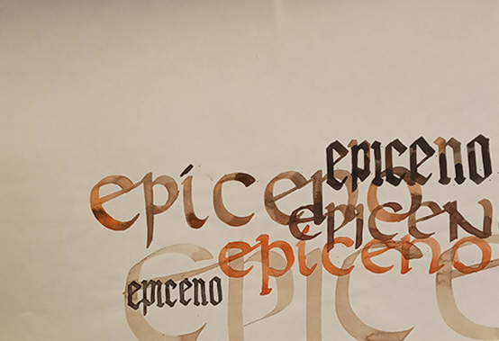

Lo que me inspira
Me gusta perderme en distintos universos, investigar sus historias y descubrir los detalles que los hacen únicos. Muchas veces encuentro inspiración en lugares que parecen no tener nada que ver entre sí, y creo que ahí está lo interesante: en conectar mundos diferentes. En lo gráfico, me atraen especialmente los contrastes. La fuerza y los trazos angulosos de la caligrafía gótica y la delicadeza y fluidez de la caligrafía inglesa, por dar un ejemplo (aunque debo admitir que me atrae cualquier tipo de caligrafía).También me interesan la arquitectura gótica, la gráfica de tipos móviles y el minimalismo, con sus formas simples y su manera de darle protagonismo a cada elemento. Fuera de lo gráfico, me gusta explorar universos más misteriosos: el cine de terror y suspenso, el esoterismo, los astros, la mitología griega y la cultura egipcia. Disfruto buscar referencias, encontrar conexiones inesperadas y dejarme llevar por la curiosidad. Muchas de las cosas que me inspiran nacen de esa mezcla de intereses, de lo que observo, investigo y descubro en cada uno de esos mundos.
